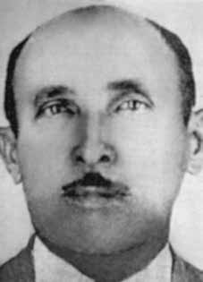

Pedro
Inácio
de Araújo
CIRCUNSTÂNCIAS DA MORTE
Pedro Inácio desapareceu em setembro de 1964, após ter sido preso por agentes do Estado brasileiro, em João Pessoa. A instalação do regime militar desencadeou um período de intensa repressão às lideranças das Ligas Camponesas. Em audiência pública promovida pela Comissão Nacional da Verdade (CNV), em parceria com a Comissão Estadual da Verdade e da Preservação da Memória da Paraíba e a Frente Parlamentar da Verdade, Neide Araújo, filha de Pedro Inácio de Araújo, relata que, naquela época, seu pai ficava escondido na casa de amigos, tendo pouco contato com a família.
Passado algum tempo nessa condição de clandestinidade, Pedro Fazendeiro, ainda de acordo com o depoimento de sua filha, teria decidido se apresentar às autoridades militares, tendo em vista seu receio de ser vítima de uma injustiça caso se entregasse à Polícia Militar da região, que sofria a influência dos latifundiários. Não foi identificado nenhum documento que consignasse a data precisa da prisão de Pedro Fazendeiro, no entanto, a documentação atesta a prisão do camponês. Em prontuário localizado nos acervos do Serviço Nacional de Informações, consigna-se como data da prisão, no 15º Regimento de Infantaria (RI), o dia 16/7/1964.
Por outro lado, contradizendo a informação anterior, o documento “Informações sobre os elementos constantes do rádio nº 351-E2 de 25 de maio de 1964, do Comandante do IV Exército”, de 29/5/1964, registra que, naquela data (dia 29), Pedro Inácio já estava preso. Certo é que, após o golpe que instaurou a ditadura militar, Pedro Inácio foi preso para responder ao IPM do Grupo dos Onze, sob a responsabilidade do major José Benedito Montenegro de Magalhães Cordeiro.
Em depoimento escrito oferecido à Comissão Especial sobre Mortos e Desaparecidos Políticos (CEMDP), Antônio Augusto de Arroxelas Macedo, vereador cassado de João Pessoa, confirmou ter estado preso com Pedro Inácio e João Alfredo no 15º RI: Em abril de 1964, quando fui preso no 15º RI em João Pessoa, fui levado para uma das três celas existentes e reservadas aos presos políticos “perigosos‟, sendo as duas outras ocupadas respectivamente por PEDRO FAZENDEIRO e João Alfredo Dias, conhecido por Nego Fubá e também líder das Ligas Camponesas.
De igual forma, na audiência pública promovida pela CNV e entidades parceiras, o ex-deputado Francisco de Assis Lemos de Souza reiterou declarações dadas anteriormente, confirmando seu testemunho de ter estado preso com Pedro Inácio e João Alfredo Dias no 15º RI. Francisco vem reiterando esse testemunho desde, pelo menos, seu depoimento escrito encaminhado à Comissão Parlamentar de Inquérito da Assembleia Legislativa da Paraíba que, em 1981, apurava a morte de Pedro Fazendeiro e Nego Fubá. O ex-deputado acrescenta que ele e os camponeses eram acusados do assassinato do fazendeiro Rubens Régis, sendo coagidos pelo major Cordeiro, responsável pelo IPM, a confessar sua responsabilidade ou denunciar os responsáveis pelo homicídio do latifundiário.
Ao retornar de um interrogatório, Nego Fubá teria lhe confidenciado acreditar que morreria na prisão, tendo em vista que o major Cordeiro instava para que ele confessasse um crime que não havia cometido. Curiosamente, logo depois dessa confidência, João Alfredo e, dias depois, Pedro Inácio foram soltos. No depoimento escrito prestado, em 1995, à CEMDP, Francisco dá detalhes sobre as datas de “libertação” dos camponeses. Assevera ainda “no dia 29 de agosto, João Alfredo foi “solto”, mas está desaparecido até hoje”.
A libertação se deu “contrariando as normas dos quartéis pois o fato se deu num sábado e à noite”. De igual modo, conta que “no dia 7 de setembro, por volta das 20 horas, Pedro Fazendeiro foi “solto” e também está desaparecido”. Esse fato teve lugar “numa quarta-feira, dia 7 de setembro, após as solenidades que contaram com a presença do então comandante do IV Exército, general Olímpio Mourão Filho”.
Essa mesma data consta como o dia da libertação de Pedro Inácio do 15º RI, pelo prontuário do camponês localizado nos acervos do Serviço Nacional de Informações. Neide Araújo relata ter visto o pai, pela última vez, no dia 6 de setembro. Ela visitava o pai periodicamente. Numa dessas visitas, Pedro Fazendeiro contou-lhe que o major Cordeiro indagava-lhe sobre a localização de armas e sobre a morte de Rubens Régis, instando para que revelasse detalhes de temas que ele desconhecia, de modo que o camponês confessava não ter esperanças de sair da prisão.
A família de Neide não foi informada da libertação do pai, tendo-lhe chegado a notícia por intermédio de uma tia que havia se encontrado com a esposa do ex-deputado Francisco. Ao chegarem no 15º RI, Neide e sua mãe foram avisadas de que Pedro Inácio já havia sido solto. A mãe retrucou dizendo que ele não poderia ter sido solto, uma vez que não havia chegado em casa. Ao que o oficial do dia replicou prontamente: “se ele não chegou em casa, foi porque a polícia pegou”. No dia 10/9/1964, o jornal Correio da Paraíba denunciou a localização de dois corpos nas adjacências da estrada que liga Campina Grande a Caruaru, próximo ao distrito de Alcantil, município de Boqueirão.
Os corpos estavam carbonizados e apresentavam sinais de tortura e enforcamento. Segundo a reportagem, não foi possível proceder à identificação dos cadáveres. Na ocasião, conforme consigna no depoimento escrito prestado à CEMDP, Francisco suspeitava “tratar-se de Pedro e João Alfredo devido à semelhança física, como também aos calções que as vítimas usavam, idênticos aos que vestiam na prisão”.
No depoimento prestado à CNV, ele afirma ainda que quem se encarregou de entregar João Alfredo e Pedro Fazendeiro a seus assassinos foram o major Cordeiro e o coronel Luiz de Barros da Polícia Militar do Estado da Paraíba (PMEPB), responsável pela repressão aos movimentos camponeses no município de Sapé. Em 1995, foram feitas tentativas no intuito de se identificar os dois corpos noticiados pelo jornal.
José Severino da Silva, conhecido como “Zé Vaqueiro”, foi quem encontrou os corpos e, por solicitação do coronel da Polícia Militar Antônio Farias, ajudou a enterrá-los no mesmo local onde foram encontrados. As tentativas de localização dos corpos, no entanto, não obtiveram sucesso. As famílias dos camponeses ainda aguardam a oportunidade de sepultar seus familiares.
A CNV convocou José Benedito Montenegro de Magalhães Cordeiro para depor, no Rio de Janeiro, em 29/7/2014. O oficial, porém, se recusou a comparecer. Ele prestaria esclarecimentos sobre os desaparecimentos de Nego Fubá e Pedro Fazendeiro.
Pedro Inácio disappeared in September 1964, after being arrested by agents of the Brazilian State, in João Pessoa. The installation of the military regime triggered a period of intense repression against the leaders of the Peasant Leagues. In a public hearing promoted by the National Truth Commission (CNV), in partnership with the State Commission for Truth and the Preservation of Memory of Paraíba and the Parliamentary Front for Truth, Neide Araújo, daughter of Pedro Inácio de Araújo, reports that, at that time, her father was hidden at a friend's house, having little contact with his family.
After some time in this clandestinity, Pedro Fazendeiro, according to his daughter's testimony, decided to present himself to the military authorities, given his fear of being a victim of injustice if he handed himself over to the region's Military Police, which was under the influence of landowners. No document was identified that recorded the precise date of Pedro Fazendeiro's arrest, however, the documentation attests to the peasant's arrest. In records located in the collections of the National Information Service, the date of arrest, in the 15th Infantry Regiment (RI), is recorded as 7/16/1964.
On the other hand, contradicting the previous information, the document “Information on the elements contained in radio no. 351-E2 of May 25, 1964, from the Commander of the IV Army”, dated 5/29/1964, records that, on that date (the 29th), Pedro Inácio was already arrested. What is certain is that, after the coup that established the military dictatorship, Pedro Inácio was arrested to respond to the IPM of the Group of Eleven, under the responsibility of Major José Benedito Montenegro de Magalhães Cordeiro.
In a written statement offered to the Special Commission on Political Deaths and Disappearances (CEMDP), Antônio Augusto de Arroxelas Macedo, impeached councilor of João Pessoa, confirmed that he had been imprisoned with Pedro Inácio and João Alfredo in the 15th RI: In April 1964, when I was arrested in the 15th RI in João Pessoa, I was taken to one of the three existing cells reserved for “dangerous” political prisoners, the other two being occupied respectively by PEDRO FAZENDEIRO and João Alfredo Dias, known as Nego Fubá and also leader of the Peasant Leagues.
Likewise, at the public hearing promoted by the CNV and partner entities, former deputy Francisco de Assis Lemos de Souza reiterated statements made previously, confirming his testimony of having been arrested with Pedro Inácio and João Alfredo Dias in the 15th RI. Francisco has been reiterating this testimony since, at least, his written testimony sent to the Parliamentary Commission of Inquiry of the Legislative Assembly of Paraíba which, in 1981, investigated the deaths of Pedro Fazendeiro and Nego Fubá. The former deputy adds that he and the peasants were accused of the murder of farmer Rubens Régis, being coerced by Major Cordeiro, responsible for the IPM, to confess their responsibility or denounce those responsible for the landowner's murder.
Upon returning from an interrogation, Nego Fubá allegedly confided in him that he believed he would die in prison, given that Major Cordeiro urged him to confess to a crime he had not committed. Interestingly, shortly after this confidence, João Alfredo and, days later, Pedro Inácio were released. In the written statement given to CEMDP in 1995, Francisco gives details about the dates of the “liberation” of the peasants. He also asserts “on August 29th, João Alfredo was “released”, but he is still missing today”.
The release took place “contrary to barracks rules as the incident took place on a Saturday and at night”. Likewise, he says that “on September 7th, at around 8 pm, Pedro Fazendeiro was “released” and is also missing”. This event took place “on a Wednesday, September 7th, after the ceremonies which were attended by the then commander of the IV Army, General Olímpio Mourão Filho”.
This same date appears as the day of the release of Pedro Inácio from the 15th RI, according to the peasant's records located in the collections of the National Information Service. Neide Araújo reports having seen her father for the last time on September 6th. She visited her father periodically. During one of these visits, Pedro Fazendeiro told him that Major Cordeiro asked him about the location of weapons and the death of Rubens Régis, urging him to reveal details of topics he was unaware of, so that the peasant confessed that he had no hope of leaving prison.
Neide's family was not informed of her father's release, the news having reached her through an aunt who had met with the wife of former deputy Francisco. Upon arriving at the 15th IR, Neide and her mother were informed that Pedro Inácio had already been released. The mother responded by saying that he could not have been released since he had not arrived home. To which the officer of the day promptly replied: “if he didn't get home, it was because the police caught him”. On 10/9/1964, the newspaper Correio da Paraíba reported the location of two bodies near the road that connects Campina Grande to Caruaru, close to the district of Alcantil, municipality of Boqueirão.
The bodies were charred and showed signs of torture and hanging. According to the report, it was not possible to identify the bodies. At the time, as stated in the written statement given to CEMDP, Francisco suspected “they were Pedro and João Alfredo due to their physical similarity, as well as the shorts that the victims wore, identical to those they wore in prison”.
In the statement given to the CNV, he also states that those responsible for handing over João Alfredo and Pedro Fazendeiro to their killers were Major Cordeiro and Colonel Luiz de Barros of the Military Police of the State of Paraíba (PMEPB), responsible for the repression of peasant movements in the municipality of Sapé. In 1995, attempts were made to identify the two bodies reported by the newspaper.
José Severino da Silva, known as “Zé Vaqueiro”, was the one who found the bodies and, at the request of Military Police Colonel Antônio Farias, helped bury them in the same place where they were found. Attempts to locate the bodies, however, were unsuccessful. Peasant families are still waiting for the opportunity to bury their relatives.
The CNV summoned José Benedito Montenegro de Magalhães Cordeiro to testify, in Rio de Janeiro, on 7/29/2014. The officer, however, refused to appear. He would provide clarification on the disappearances of Nego Fubá and Pedro Fazendeiro.
Pedro Inácio desapareció en septiembre de 1964, tras ser detenido por agentes del Estado brasileño, en João Pessoa. La instalación del régimen militar desencadenó un período de intensa represión contra los líderes de las Ligas Campesinas. En audiencia pública promovida por la Comisión Nacional de la Verdad (CNV), en colaboración con la Comisión Estatal para la Verdad y Preservación de la Memoria de Paraíba y el Frente Parlamentario por la Verdad, Neide Araújo, hija de Pedro Inácio de Araújo, relata que, en ese momento, su padre estaba escondido en casa de un amigo, teniendo poco contacto con su familia.
Luego de un tiempo en esta clandestinidad, Pedro Fazendeiro, según el testimonio de su hija, decidió presentarse ante las autoridades militares, ante el temor de ser víctima de una injusticia si se entregaba a la Policía Militar de la región, que se encontraba bajo la influencia de los terratenientes. No se identificó ningún documento que registrara la fecha precisa de la detención de Pedro Fazendeiro, sin embargo, la documentación da fe de la detención del campesino. En registros ubicados en las colecciones del Servicio Nacional de Información, la fecha de arresto, en el 15º Regimiento de Infantería (RI), consta como 16/7/1964.
Por otra parte, contradiciendo la información anterior, el documento “Información sobre los elementos contenidos en la radio nº 351-E2 del 25 de mayo de 1964, del Comandante del IV Ejército”, de fecha 29/05/1964, registra que, en esa fecha (el 29), Pedro Inácio ya se encontraba detenido. Lo cierto es que, después del golpe que instauró la dictadura militar, Pedro Inácio fue detenido para responder al IPM del Grupo de los Once, bajo la responsabilidad del mayor José Benedito Montenegro de Magalhães Cordeiro.
En una declaración escrita ofrecida a la Comisión Especial sobre Muertes y Desapariciones Políticas (CEMDP), Antônio Augusto de Arroxelas Macedo, concejal acusado de João Pessoa, confirmó que había sido encarcelado con Pedro Inácio y João Alfredo en la 15ª RI: En abril de 1964, cuando fui detenido en la 15ª RI de João Pessoa, fui llevado a una de las tres celdas existentes reservados para presos políticos “peligrosos”, siendo los otros dos ocupados respectivamente por PEDRO FAZENDEIRO y João Alfredo Dias, conocido como Nego Fubá y también líder de las Ligas Campesinas.
Asimismo, en la audiencia pública promovida por la CNV y entidades colaboradoras, el exdiputado Francisco de Assis Lemos de Souza reiteró declaraciones realizadas anteriormente, confirmando su testimonio de haber sido detenido junto a Pedro Inácio y João Alfredo Dias en la 15ª RI. Francisco viene reiterando este testimonio desde, al menos, su testimonio escrito enviado a la Comisión Parlamentaria de Investigación de la Asamblea Legislativa de Paraíba que, en 1981, investigó las muertes de Pedro Fazendeiro y Nego Fubá. El ex diputado agrega que él y los campesinos fueron acusados del asesinato del campesino Rubens Régis, siendo coaccionados por el mayor Cordeiro, responsable del IPM, a confesar su responsabilidad o denunciar a los responsables del asesinato del terrateniente.
Al regresar de un interrogatorio, Nego Fubá supuestamente le confió que creía que moriría en prisión, dado que el mayor Cordeiro lo instó a confesar un delito que no había cometido. Curiosamente, poco después de esta confidencia, João Alfredo y, días después, Pedro Inácio fueron liberados. En la declaración escrita dada al CEMDP en 1995, Francisco da detalles sobre las fechas de la “liberación” de los campesinos. También afirma que “el 29 de agosto João Alfredo fue “liberado”, pero hoy sigue desaparecido”.
La liberación se produjo "contraviniendo las normas del cuartel, ya que el incidente tuvo lugar un sábado por la noche". Asimismo, dice que “el 7 de septiembre, alrededor de las 20 horas, Pedro Fazendeiro fue “liberado” y también se encuentra desaparecido”. Este hecho tuvo lugar “un miércoles 7 de septiembre, después de las ceremonias a las que asistió el entonces comandante del IV Ejército, general Olímpio Mourão Filho”.
Esta misma fecha aparece como el día de la liberación de Pedro Inácio de la 15ª RI, según los registros del campesino ubicados en las colecciones del Servicio Nacional de Información. Neide Araújo relata haber visto a su padre por última vez el 6 de septiembre. Visitaba a su padre periódicamente. Durante una de esas visitas, Pedro Fazendeiro le contó que el mayor Cordeiro le preguntó sobre la ubicación de las armas y la muerte de Rubens Régis, instándolo a revelar detalles de temas que desconocía, por lo que el campesino confesó que no tenía esperanzas de salir de prisión.
La familia de Neide no fue informada de la liberación de su padre, ya que la noticia le llegó a través de una tía que se había reunido con la esposa del exdiputado Francisco. Al llegar al IR 15, Neide y su madre fueron informadas que Pedro Inácio ya había sido liberado. La madre respondió diciendo que no podrían haberlo liberado ya que no había llegado a casa. A lo que el oficial de turno respondió rápidamente: “si no llegó a casa es porque lo atrapó la policía”. El 9/10/1964, el periódico Correio da Paraíba informó sobre la ubicación de dos cadáveres cerca de la carretera que une Campina Grande con Caruaru, cerca del distrito de Alcantil, municipio de Boqueirão.
Los cuerpos estaban carbonizados y mostraban signos de tortura y ahorcamiento. Según el informe, no fue posible identificar los cadáveres. En ese momento, según consta en la declaración escrita entregada al CEMDP, Francisco sospechó “que eran Pedro y João Alfredo por su parecido físico, así como por el pantalón corto que vestían las víctimas, idéntico al que vestían en prisión”.
En la declaración dada a la CNV, también afirma que los responsables de entregar a João Alfredo y Pedro Fazendeiro a sus asesinos fueron el mayor Cordeiro y el coronel Luiz de Barros de la Policía Militar del Estado de Paraíba (PMEPB), responsables de la represión de los movimientos campesinos en el municipio de Sapé. En 1995 se intentó identificar los dos cadáveres denunciados por el periódico.
José Severino da Silva, conocido como “Zé Vaqueiro”, fue quien encontró los cuerpos y, a pedido del coronel de la Policía Militar Antônio Farias, ayudó a sepultarlos en el mismo lugar donde fueron encontrados. Sin embargo, los intentos de localizar los cadáveres fueron infructuosos. Las familias campesinas todavía esperan la oportunidad de enterrar a sus familiares.
La CNV citó a declarar a José Benedito Montenegro de Magalhães Cordeiro, en Río de Janeiro, el 29/07/2014. El funcionario, sin embargo, se negó a presentarse. Proporcionaría aclaraciones sobre las desapariciones de Nego Fubá y Pedro Fazendeiro.